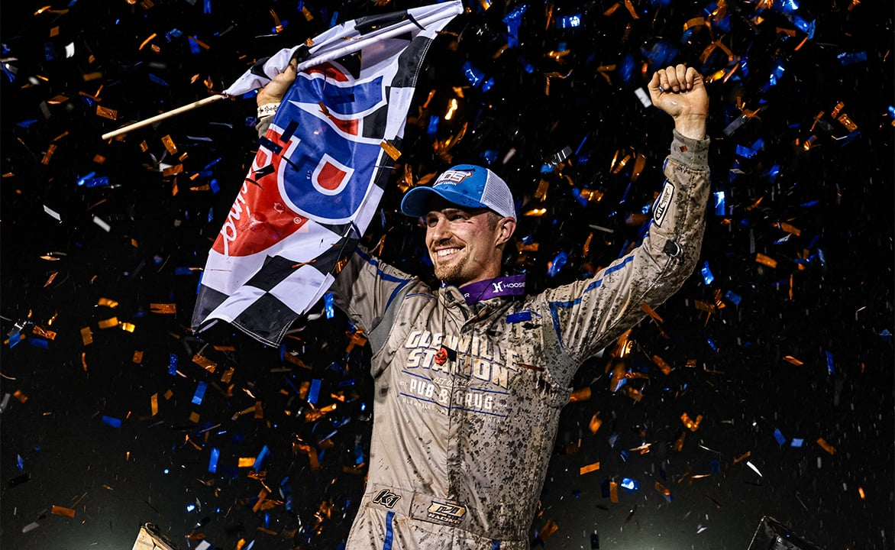

Chase Dietz Wins Inaugural J&S Classics PA Posse 410 Sprint Car Championship
Dietz finished 137 points ahead of Danny Dietrich in the final standings and earned $50,000 as the first champion of the Pennsylvania 410 series. He also took the $10,000 J&S Classics Keystone King title.

Chase Dietz is the champion of the inaugural J&S Classics PA Posse 410 Sprint Cars season, according to the series’ final release, which presenting sponsor Hoseheads.com published Nov. 18. Dietz received $50,000 as the first champion of the series. The release said Dietz and the rest of the top 15 in points would receive their checks at the series banquet at the Eastern Museum of Motor Racing on Saturday, Nov. 21, and Hoseheads.com posted photos from the banquet the following day. The Williamsport Sun-Gazette also reported Dietz’s championship and $50,000 prize on Nov. 27.
Dietz, driving the Stehman Motorsports No. 23, finished with 1,740 points in the final standings posted by Hoseheads.com, 137 ahead of Danny Dietrich (1,603). Troy Wagaman Jr. was third with 1,584, followed by Justin Whittall (1,358), Ryan Smith (1,218), Lance Dewease (1,180), Logan Rumsey (1,068), Cameron Smith (1,033), T.J. Stutts (938) and Freddie Rahmer (925). Doug Hammaker, Austin Bishop, Buddy Schweibinz, Matt Campbell and Tyler Ross completed the top 15. Dietz also won the J&S Classics Keystone King points title, which pays $10,000, according to the release. The final Keystone King standings credit him with 1,335 points and 16 series wins, ahead of Dietrich with 692 points.
Anthony Macri won the final two races of the PA Posse season, at Bridgeport Motorsports Park in New Jersey on Oct. 31 and at BAPS Motor Speedway on Nov. 14, according to the series release. Dietz finished eighth at Bridgeport and second to Macri in the York Excavating Sprint Showdown at BAPS. Hoseheads.com reported that Dietz’s win at a PA Posse 410 show at BAPS on Oct. 24 was his 27th victory of 2026, and noted before the Sprint Showdown that he entered that weekend leading the nation in sprint car feature wins.
Dietz’s biggest win of the season came Oct. 3 in the 64th J&S Classics National Open at Williams Grove Speedway, where he held off six-time National Open winner Donny Schatz for the $75,000 top prize, according to the World of Outlaws. It was his first National Open win, and the series reported he entered that race with a nation-leading 23 wins in 410 sprint car competition. Hoseheads.com said the J&S Classics PA Posse Sprint Cars presented by Hoseheads will return in 2027.